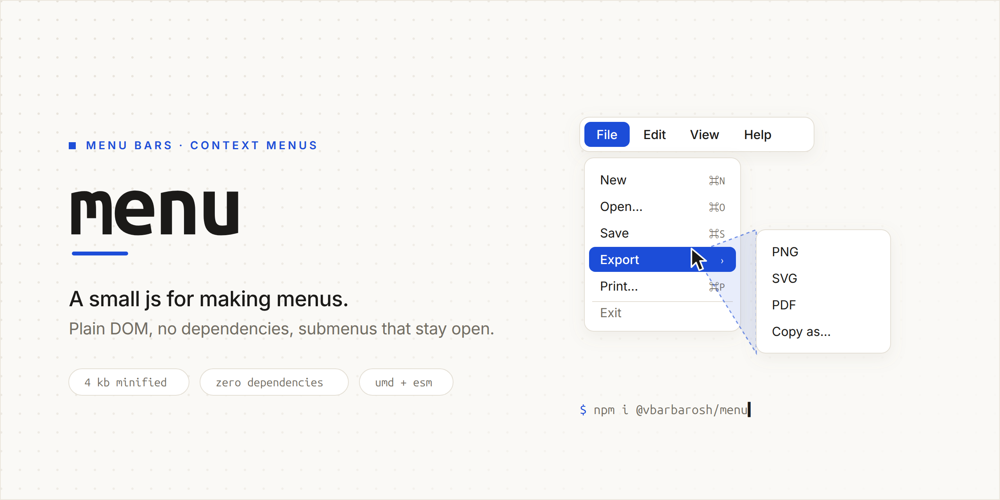

A small js for making menus: a menu bar and a context menu over plain
<ul>/<li> markup. No dependencies, under 4 KB minified.
A submenu stays open while the pointer heads for it, even across other rows.
Demos
- Menu bar — File, Edit, View with nested submenus, a keep-alive Zoom menu
- Context menu — right-click a canvas, choose a row, read the result
Install
npm i @vbarbarosh/menu — or from a script tag:
https://unpkg.com/@vbarbarosh/menu@0.1.0/dist/menu.jshttps://unpkg.com/@vbarbarosh/menu@0.1.0/dist/contextmenu.jshttps://unpkg.com/@vbarbarosh/menu@0.1.0/dist/theme-flat.css
The README on GitHub has the markup rules, both APIs and the options.